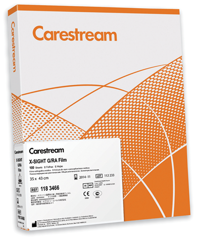

Carestream x-sight sistema para radiografía general

DESCRIPCIÓN:
El mejor sistema pantalla-película para radiografía general permite obtener imágenes más nítidas y de un amplio rango dinámico de contraste, superiores a cualquier otro sistema pantalla-película para radiografía general Carestream.
Diseñado para radiografía general, es ideal para satisfacer las necesidades de imagen en gastroenterología/urología, angiografía, ortopedia y traumatología/reumatología.
CARACTERÍSTICAS:
• Mayor resolución en la imagen permite una mejor visualización de la información clínica que se traduce en una mayor confianza en el diagnóstico.
• Mayor claridad y detalle de la travécula ósea para estudios de ortopedia y extremidades.
• El sistema pantalla-película con el mayor detalle de todos los sistemas de velocidad 400.
• Mejor visualización de imagen clínica en las áreas de mayor densidad o sobreexpuestas.
• Aumenta la tolerancia del sistema a la sobreexposición.
|
Ventajas y beneficios |
|
|
Construcción asimétrica de pantallas |
Maximiza la relación entre nitidez y velocidad. |
|
Partículas de fósforo más pequeñas |
– Elimina virtualmente el moteado estructural. – Ayuda a mejorar la eficiencia de conversión de rayos X a imagen, a niveles altos de absorción. – Reduce el ruido radiográfico. |
|
Tecnología de cero cruzamiento |
– Aumento de la resolución, ya que minimiza la degradación de la imagen por la dispersión de la luz a través de la base de la película. |
|
Recubrimiento de película muy fino |
Reduce la borrosidad de la imagen. |
|
Tecnología patentada de grano-T |
– Provee nitidez de imagen. – Disminuye los defectos de menor densidad ocasionados antes del procesamiento. |
DATOS COMPLEMENTARIOS: Si desea más información sobre el sistema para radiografía general CARESTREAM X-SIGHT, favor de contactar al representante CARESTREAM de su localidad o a:
CARESTREAM
Teléfono: (33) 3134-6200
o bien, visítenos en: www.carestream.com.mx